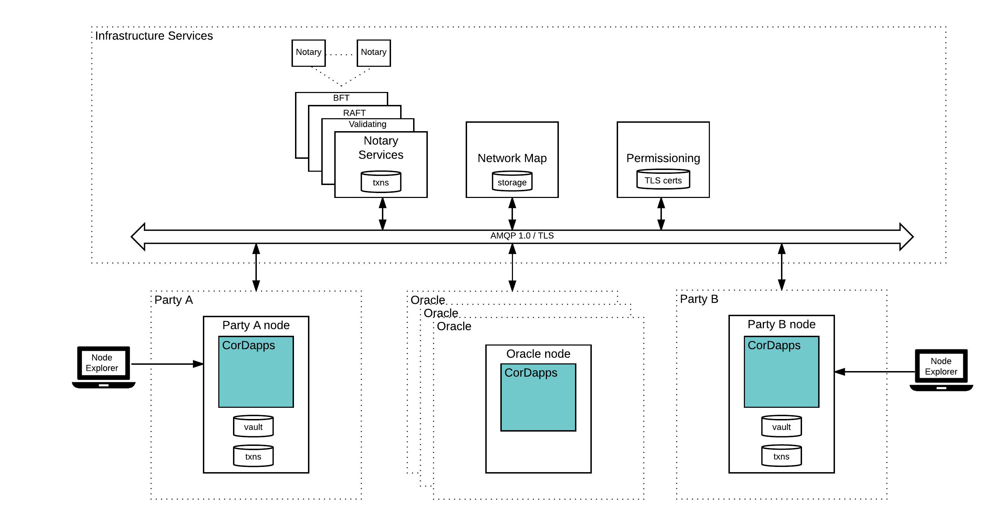

Corda ecosystem¶
A Corda network consists of the following components:
- Nodes, where each node represents a JVM run-time environment hosting Corda services and executing applications (“CorDapps”). Nodes communicate using AMQP/1.0 over TLS.
- A permissioning service that automates the process of provisioning TLS certificates.
- A network map service that publishes information about nodes on the network.
- One or more pluggable notary service types (which may be distributed over multiple nodes). A notary guarantees uniqueness and validity of transactions.
- Zero or more oracle services. An oracle is a well known service that signs transactions if they state a fact and that fact is considered to be true.
- CorDapps which represent participant applications that execute contract code and communicate using the flow framework to achieve consensus over some business activity
- Standalone Corda applications that provide manageability and tooling support to a Corda network.
These components are illustrated in the following diagram:
Note:
- Corda infrastructure services are those which all participants depend upon, such as the network map and notaries.
- Corda services can be deployed by participants, third parties or a central network operator (eg. such as R3); this diagram is not intended to imply only a centralised model is supported
It is important to highlight the following:
- Corda is designed for semi-private networks in which admission requires obtaining an identity signed by a root authority.
- Nodes are arranged in an authenticated peer to peer network. All communication is direct.
- Data is shared on a need-to-know basis. Nodes provide the dependency graph of a transaction they are sending to another node on demand, but there is no global broadcast of all transactions.
- Nodes are backed by a relational database and data placed in the ledger can be queried using SQL
- The network map publishes the IP addresses through which every node on the network can be reached, along with the identity certificates of those nodes and the services they provide.
- All communication takes the form of small multi-party sub-protocols called flows.
- Oracles represent gateways to proprietary (or other) business logic executors (e.g., central counterparties or valuation agents) that can be verified on-ledger by participants.
CorDapps¶
Corda is a platform for the writing of “CorDapps”: applications that extend the distributed ledger with new capabilities. Such apps define new data types, new inter-node protocol flows and the “smart contracts” that determine allowed changes. The combination of state objects (data), contract code (allowable operations), transaction flows (business logic choreography), any necessary APIs, vault plugins, and UI components can be thought of as a shared ledger application, or corda distributed application (“CorDapp”). This is the core set of components a contract developer on the platform should expect to build.
Examples of CorDapps include asset trading (see IRS demo and Trader demo), portfolio valuations (see SIMM and Portfolio Demo - aka the Initial Margin Agreement Demo), trade finance, post-trade order matching, KYC/AML, etc.